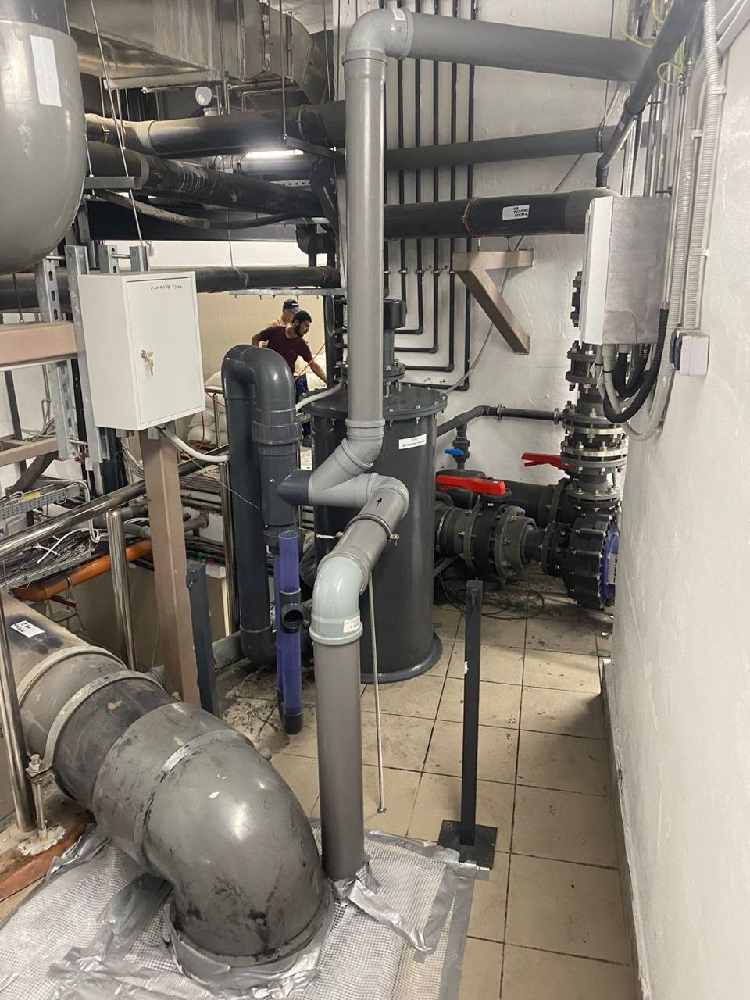

Введение
Солевой электролиз для бассейна: принцип работы и ограничения
Солевой электролизатор не очищает воду от загрязнений и не отменяет дезинфекцию. Он вырабатывает хлор из растворённого в воде хлорида натрия в электролизной ячейке. Поэтому «бассейн без хлора» — неверное описание такой системы: меняется способ получения дезинфектанта, а не сама задача обработки воды.
Для владельца главный вопрос — подходит ли установка конкретной чаше и можно ли встроить её в существующую циркуляцию. Нужно проверить производительность ячейки, допустимую концентрацию соли, материалы оборудования и отделки, требования к потоку воды и порядок контроля химических показателей.

Оглавление
Что разберем в статье
Разберём, как генератор производит хлор, какие условия нужны ячейке и что проверить до установки. Отдельно — границы технологии: контроль воды и механическая фильтрация остаются необходимыми.
- Фильтрация воды для бассейна — базовая статья о насосах, фильтрах и обороте воды.
- Баланс pH воды в бассейне — как pH влияет на комфорт, реагенты и ресурс оборудования.
- Обслуживание бассейна — регламент регулярного сервиса частной чаши.
- Автоматизация бассейна — сценарии управления инженерией, светом и водоподготовкой.
- Бассейн без хлора — что реально означает мягкая водоподготовка и какие ограничения важно учитывать.
Принцип работы
Как солевой электролиз обеззараживает воду
Насос подаёт воду с растворённой солью через электролизную ячейку. Электрический ток запускает реакцию на электродах, в результате которой система производит активный хлор. Он поступает в чашу вместе с циркулирующей водой и участвует в её обеззараживании. Часть активного хлора после реакций переходит обратно в хлориды, однако потери воды, разбавление и другие процессы означают, что запас соли и состояние воды всё равно нужно проверять.
Что происходит в ячейке и что остаётся обязанностью владельца
Ячейка работает только в пределах, заданных изготовителем: важны солёность, расход через неё, температура воды и состояние электродов. У разных моделей различаются допустимые значения, датчики и способы защиты. Цифры и инструкции из паспорта одной установки нельзя переносить на другую.
Электролизатор не удаляет листья, пыль и другие взвешенные частицы — за это отвечает механическая фильтрация. Он также не измеряет автоматически все показатели воды, если соответствующие датчики и контроллер не предусмотрены отдельно. О циркуляции и фильтрах подробнее рассказано в статье о фильтрации воды в бассейне.
Запах или раздражение сами по себе не показывают, что соли мало или много: на свойства воды влияют дезинфектант, pH, загрязнения и режим эксплуатации. Проверяйте воду подходящим тестом и корректируйте её по инструкции к применяемым средствам. Разбор измерения pH приведён в материале о балансе pH воды.
Система может уменьшить необходимость регулярно вручную добавлять хлорсодержащий реагент, но не гарантирует меньший расход химии или более комфортные ощущения для каждого пользователя. Это зависит от исходной воды, нагрузки, настроек, ухода и других элементов водоподготовки.
Подбор
Как выбрать солевой электролизатор для частного бассейна
Сначала соберите исходные данные: объём чаши, её открытое или закрытое расположение, режим использования, наличие укрытия, параметры циркуляции и состав уже установленного оборудования. Производительность генератора выбирают по условиям эксплуатации и требованиям производителя, а не только по объёму, указанному в рекламном названии модели.
Что запросить у поставщика и сверить с паспортом
- Объём бассейна и условия, для которых изготовитель рассчитывает производительность выбранной модели.
- Требуемая концентрация соли, допустимый диапазон и способ проверки фактического значения.
- Требования к потоку через ячейку и совместимость с насосом, фильтром и режимами циркуляции.
- Ограничения по материалам чаши, закладным деталям, нагревателю и другим контактирующим с водой элементам.
- Защиты, индикация, расходные детали, гарантия и порядок обслуживания по паспорту.
Сверьте диапазон солёности и способ её измерения, минимальный и максимальный поток через ячейку, рабочие условия, требования к монтажному положению и совместимость с автоматикой. Если у модели есть датчик протока или блокировка генерации при остановке циркуляции, уточните, как именно устроена эта защита и что она контролирует.
Проверьте допустимость солёной воды для отделки, металлических деталей, лестницы, теплообменника, нагревателя и других элементов, контактирующих с водой. Совместимость нельзя выводить только из того, что деталь изготовлена из нержавеющей стали: запросите подтверждение для конкретного материала и уровня соли.
Уточните, как по руководству обслуживать ячейку, проверять показания и реагировать на сигнал ошибки. Частота осмотра и очистки зависит от модели и состояния воды; регулярное кислотное промывание «по расписанию» без проверки инструкции может повредить электроды.
Сравнение
Солевой электролиз и другие способы подачи дезинфектанта
| Решение | Что делает система | Что всё равно нужно проверять |
|---|---|---|
| Дозирование хлорсодержащего средства | Реагент добавляют вручную или через дозатор; конкретная схема зависит от выбранного способа подачи. | Показатели воды, настройку дозирования и состояние дозирующего оборудования. |
| Солевой электролиз | Ячейка производит хлор из соли, растворённой в воде, пока соблюдены условия её работы. | Содержание дезинфектанта и pH, солёность и состояние ячейки — по инструкции модели. |
| УФ или озон | Обрабатывают поток воды в соответствующем устройстве; роль этапа зависит от проектной схемы. | Параметры всей системы и требования к дезинфекции воды в чаше. |
Сравнивайте не обещания «мягкой воды», а способ подачи дезинфектанта, состав оборудования и обязанности по контролю. УФ-установка и озонатор относятся к другим технологиям; их роль и необходимость остаточного обеззараживания определяются проектом и документацией выбранной системы. Подробное сравнение вариантов, которые называют обработкой «без хлора», вынесено в отдельную статью о бассейне без хлора.
Пошаговая инструкция
Что проверить при установке и запуске
- Сверить модель, комплектность, паспорт и требования к размещению в существующей гидравлической схеме.
- Проверить материалы бассейна и оборудования на совместимость с предусмотренной концентрацией соли.
- Измерить исходную солёность и добавлять только рекомендованный изготовителем тип соли и её количество.
- Убедиться, что насос обеспечивает требуемый для данной модели поток и её защита не позволяет выработку без циркуляции.
- Записать базовые показания и порядок планового контроля воды, осмотра и обслуживания ячейки.
До монтажа сопоставьте схему трубопроводов с руководством электролизатора: порядок оборудования, направление потока, требуемые прямые участки или байпас и монтажное положение зависят от модели. Не копируйте схему подключения другого производителя.
Перед вводом в работу проверьте воду, соль и циркуляцию по инструкции выбранной установки. Запуск, блокировки насоса, настройку выработки и очистку ячейки поручайте специалисту, если этого требует изготовитель. Владелец должен знать, где смотреть состояние системы и как действовать при сообщении об ошибке.
Ошибки
Ошибки при выборе и эксплуатации
- Подбирать установку только по объёму, не учитывая режим бассейна и паспортные условия модели.
- Добавлять соль без предварительного измерения или использовать неподходящий продукт.
- Игнорировать допустимость солёной воды для отделки, металлов и теплообменного оборудования.
- Считать сигнал датчика или показание генератора заменой независимого контроля воды.
Наиболее рискованная ошибка — считать электролизатор автономной системой, которая сама поддерживает качество воды. Генерация зависит от работы циркуляции и состояния ячейки, а концентрация соли не показывает, достаточно ли дезинфектанта в чаше. Если не проводить измерения, система может работать, но не обеспечивать требуемый режим обработки.
Решения
Что должно быть в понятной схеме эксплуатации
- Зафиксировать модель установки, паспортные требования и фактические настройки при пуске.
- Определить порядок измерения дезинфектанта, pH и солёности по инструкциям средств и генератора.
- Сверить осмотр и очистку ячейки с руководством: не применять способ очистки, которого изготовитель не разрешает.
Передайте владельцу инструкцию именно на установленную модель: какие показания смотреть, как часто проверять воду, что делать при остановке потока и какие действия с ячейкой запрещены. Для обычного ухода за чашей и водой полезен отдельный материал об обслуживании бассейна.
CTA
Подбор для существующего бассейна
Для первичной оценки подготовьте объём чаши, схему циркуляции, перечень оборудования и сведения о материалах отделки и закладных деталей. По этим данным можно проверить, подходит ли конкретный генератор; окончательные условия монтажа и эксплуатации сверяются с его паспортом.
- Получить расчет
FAQ
Вопросы о солевом электролизе
Сколько соли добавлять в бассейн?
Количество зависит от требований конкретной модели и уже имеющегося содержания соли в воде. Сначала измерьте исходное значение, затем следуйте расчёту изготовителя; универсальную дозировку для всех установок применять нельзя.
Будет ли вода такой же солёной, как море?
У таких систем содержание соли задаётся требованиями модели и заметно ниже солёности морской воды. Точное значение зависит от установки; вкусовое восприятие индивидуально, поэтому ориентируйтесь на измерения и паспорт, а не на ощущение.
Можно ли использовать электролизатор с нагревателем?
Только если изготовители генератора и нагревателя допускают совместную работу при предусмотренной концентрации соли. Подтвердите совместимость для конкретных материалов и соблюдайте схему монтажа обоих устройств.
Подходит ли солевой электролиз для уличного бассейна?
Это зависит от производительности модели и условий эксплуатации на открытом воздухе, включая режим использования и укрытие. Подбор делайте по паспорту и фактической нагрузке, не по одному объёму чаши.
Нужно ли проверять воду и добавлять другие средства?
Да. Электролизатор производит хлор, но владелец всё равно проверяет дезинфектант и другие требуемые показатели воды. Корректирующие средства применяют по результатам измерений и инструкции; генератор не заменяет обслуживание бассейна.